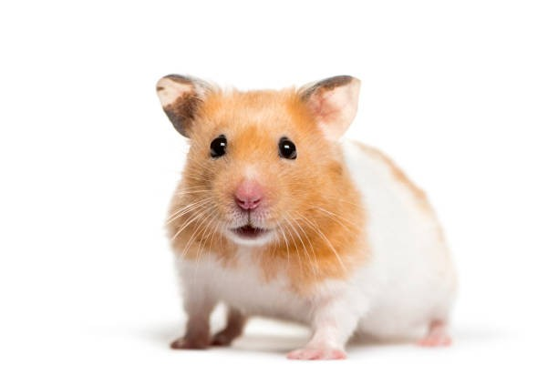
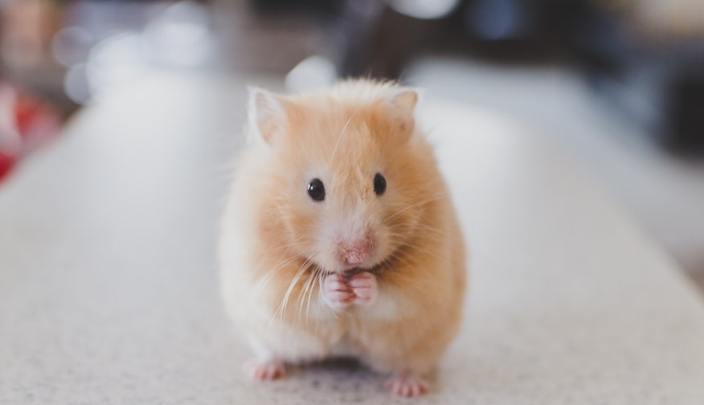

Ayanad
Syrian Hamster
6 months · Little Whiskers Rescue
Adventurous and curious, loves running in his wheel and hoarding snacks.
Adopt Ayanad
Nini
Roborovski Hamster
4 months · Cozy Burrow Haven
Gentle and playful, enjoys crawling through tunnels and sunflower seeds.
Adopt Nini
Koko
Winter White Dwarf Hamster
1 year · Paw Palace Shelter
Speedy and smart, fun to watch as he zooms around his cage.
Adopt Koko

Bubu
Teddy Bear Hamster
9 months · Fluffy Friends Shelter
Sweet and social, enjoys climbing tubes and hiding in soft bedding.
Adopt Bubu
Choco
Campbell’s Dwarf Hamster
1 year · Pet Haven
Friendly and brave, loves to eat apples and climb his wooden wheel.
Adopt Choco

Mimi
Chinese Hamster
7 months · Whisker Haven
Quiet but curious, loves to burrow and create tiny tunnels.
Adopt Mimi